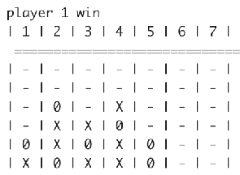
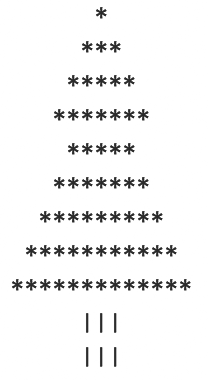
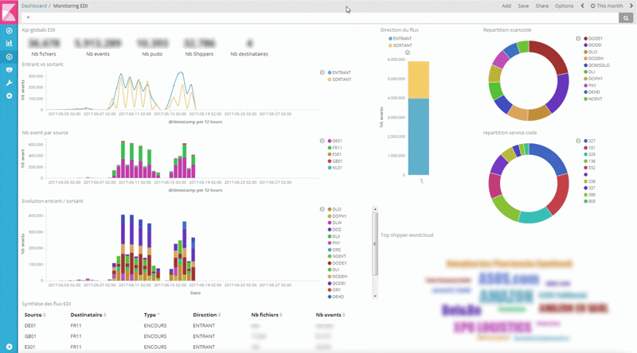
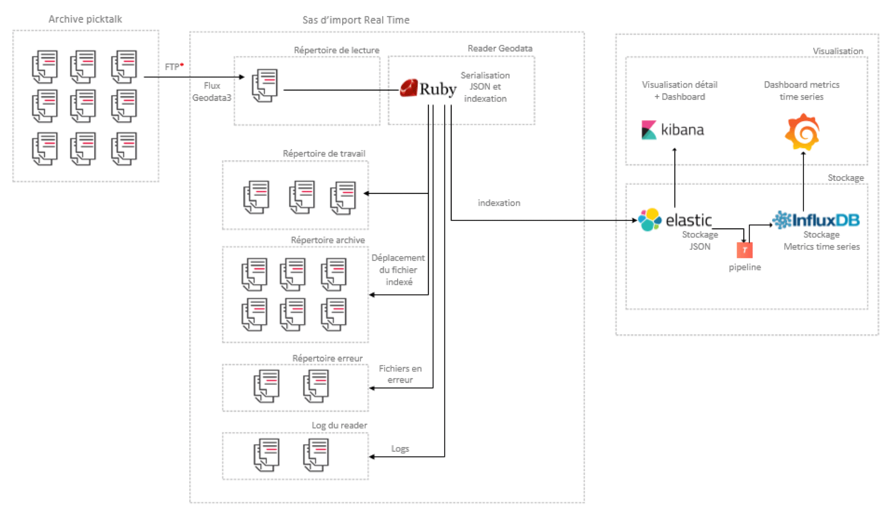
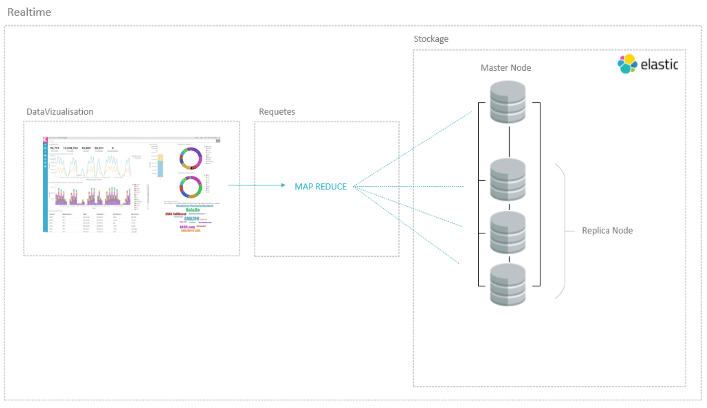

Après 7 années travaillées dans la finance puis la data, j'ai décidé
d'améliorer mes compétences en développement et d'effectuer la formation intensive
"Coding Academy by Epitech". Ce portefolio développé en javascript et canvas fait
office de démonstration de certaines notions algorithmique.
Jeu 2048
Code GitHub
Développé en 5 jours pour un rush JQuery.
Technologies utilisées : javascript/JQuery
Jeu Morpion
Code GitHub
Développé en 2 heures.
IA basée sur du "machine learning" en cours de réalisation.
Technologies utilisées : javascript/JQuery
Jeu Puissance4
Code GitHub
Piscine de C, développé en 3 jours.
Technologie utilisée : C
Ici la description alternative

Reproduction du jeu puissance4 en C.
Sapin
Code GitHub
Examen final de la piscine de C, développé en une journée.
Technologie utilisée : C
Ici la description alternative

L'algorithme affiche un sapin à n segments, chaque segment comportant 3 + n
branches. La largeur d'une branche est de 2 étoiles de plus que la branche précédente.
Lors d'un changement de segment la largeur est celle de la branche
supérieure
Projet Data
Code GitHub
Indexation de fichier EDI (Electronic Data Interchange) dans le cadre d'un poc bigdata.
Technologie utilisée : Ruby, Elasticsearch, Kibana

Poc realisé lors de ma dernière mission chez Pickup. Ce projet avait pour objectif de démontrer l'intérêt du format JSON
et des technologies NOSQL pour le traitement et le suivi des données reçues des partenaires et des services web.
Ce projet s'est déroulé sous forme de lab et s'est étendu sur une période de 6 mois. La phase de développement à durée 3 mois.
Architechture des composants

Gestion des performance avec Map Reduce

Haut